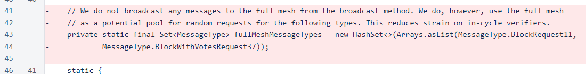
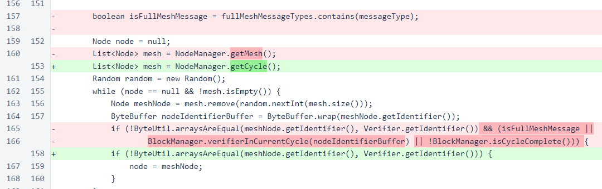
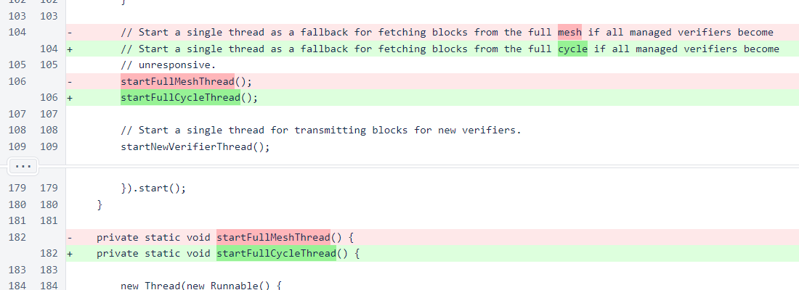

Nyzo version 548 (commit on GitHub) eliminates use of queue verifiers as data sources.
This version affects the verifier. Only out-of-cycle verifiers will benefit from this update.
This update will improve the health of the queue and provide a basis for further improvements. It will cause an increased demand on the cycle for block-with-votes requests, but this increased demand should be at least partially offset by elimination of some excess requests that are made by verifiers with chain-tracking issues.
In Message, the fullMeshMessageTypes set has been eliminated. The full mesh will no longer be used as a data source.
In the randomNode() method, the cycle is now used as a source of nodes instead of the full mesh.
In Sentinel, the startFullMeshThread() has been renamed to startFullCycleThread(). This is the thread that is used as a fallback for retrieving blocks. This thread has always used the cycle, not the full mesh, as a data source. The new name clarifies this.
